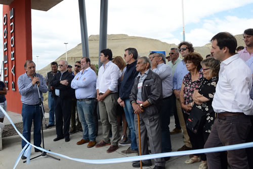
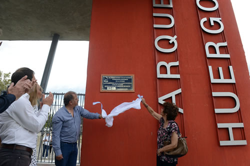

Real Chubut - Agencia de Noticias


Linares: “Este parque es un sueño cumplido para todos los comodorenses”

Esas fueron las declaraciones del intendente, Carlos Linares tras realizar la esperada inauguración del parque de la ciudad, Chalet Huergo. El mismo, se reedificó en su totalidad con instalaciones de vanguardia; iluminación Led; forestación autóctona y un amplio estacionamiento interno. Al respecto, el jefe de la ciudad expresó que “esta obra demuestra que, así como avanzamos en este año tan difícil para la economía del país, vamos a hacer mucho más el año entrante”.
El acto inaugural se llevó a cabo sobre el acceso ubicado entre la ruta nacional y el camino Centenario y contó con la presencia del viceintendente, Juan Pablo Luque; secretarios y subsecretarios municipales; los concejales del FPV, Guillermo Almirón, Maximiliano Sampaoli, Nicolás Caridi, Beatriz Neira, Adriana Casanovas, Sirley García y los concejales de Cambiemos, Cristina Cejas y Pablo Martínez; la señora vecinalista del barrio, Ester Cordero; y público en general.
Luego de la invocación religiosa y posterior bendición de las instalaciones a cargo del párroco, Mario Vidmar, de la Catedral San Juan Bosco, el intendente de la ciudad, reconoció el trabajo incansable de Agustín Agustacci y Ester Cordero por el bienestar del barrio.
El nuevo Parque Huergo cuenta con una senda peatonal pensada para no impactar el medio ambiente, de aproximadamente 1200 metros acondicionado con su respectivo mobiliario; iluminación led de última generación; estacionamiento en el margen norte y sur del predio con una capacidad para albergar más de 500 vehículos. También cuenta con juegos para niños, secciones de estiramientos para realizar ejercicio físico y nuevas casillas de seguridad con sus respectivas cámaras.

Durante el acto, el intendente expresó que “hoy inauguramos una obra más y la verdad, es que éstas son las satisfacciones más grandes de la política, construir tu ciudad; construir el Comodoro que soñamos hace muchos años. Y esto se hace posible porque estamos de acuerdo, porque no solo lo soñamos sino que lo ejecutamos. Conseguimos fondos y los cuidamos, justamente en un momento muy complejo que estamos viviendo en nuestro querido país”.
“Terminar el año como lo estamos haciendo, es un sueño cumplido para nosotros. Hace dos días inauguramos también un paseo costero en la zona de Restinga Alí, muy pedido y añorado por todos los vecinos de ese lugar desde hace muchos años. Y vamos a seguir así, porque este Municipio tiene esto, trabajar de cara a la gente”.
“Esta es una obra pensada para toda la familia”
Por su parte, el secretario de Infraestructura, Abel Boyero agregó que “creemos que los espacios públicos son los más igualadores que existen. Cualquier persona, de cualquier condición lo puede disfrutar y esa es la idea que tiene Linares, que en cada lugar de la ciudad, exista un espacio donde la familia pueda pasar tiempo al aire libre”.
“Toda la parte de forestación fue diseñada con profesionales del INTA para poder recuperar el parque que estaba absolutamente abandonado y deteriorado. Este es el inicio de la recuperación de toda esta zona y es fundamental que cada comodorenses lo utilice y lo cuide”.
Finalizando, Boyero dijo que “también estamos pensando en dotar el parque con obras complementarias para embellecerlo aun más como la construcción de baños y un espacio que funcione como bufet. También vamos a forestar un predio que cedió YPF y a finalizar el ingreso seguro a través de la dársena paralela a la ruta 3”.
En ese sentido, la vecinalista del barrio de km 3, Ester Cordero expuso que “para todos nosotros que nacimos y nos criamos en este querido barrio, es muy emotivo. Ver que hoy está restaurado, nos da mucha alegría y al recorrerlo, mucho más. Lo que le pedimos a la gente es que, más allá de la seguridad del lugar, empiecen a cuidar y respetar esto que es de todos”.
“Esta es una obra para disfrutar y para recordar nuestro sentido de pertenencia”
El secretario de cultura, Daniel Vleminchx agregó que esta obra no sólo recuperó un edificio y un espacio verde sino “un lapso de la historia de Comodoro Rivadavia porque este Chalet Huergo, con su museo, forman parte del patrimonio de nuestra ciudad y sin lugar a dudas, con esta obra realizamos un aporte sustantivo para que este parque verde pueda ser nuevamente disfrutado por toda la familiar”.
“Abundar en esa historia seria reiterar conceptos conocidos para todos los comodorenses. Pero en aquellos que habitamos en nuestra ciudad, este Chalet Huergo forma parte de nuestro sentido de pertenencia porque sin ninguna duda nos refleja esa maravillosa empresa del estado, YPF, que formó esta ciudad”.
Vleminchx agregó que “tal como lo anunció el intendente, la próxima etapa será la de poner en valor el Chalet propiamente dicho, que años atrás sufrió un incendio en sus piezas del interior del museo. Las mismas fueron recuperadas por empleados municipales en un 95 por ciento y ahora hay que hacer una nueva etapa para poner ese chalet en el contexto de lo que implica este gran parque”.
PUBLICIDAD